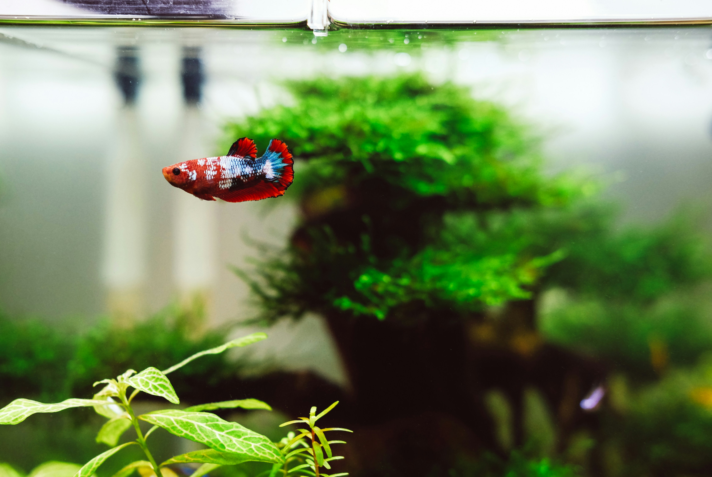

Relational Databases: Designing relationships for fishkeeping hobbists
Brya Patterson, Summer 2024, University of Washington, MS Information Management (MSIM)

Executive Summary
- The Mission: Architected a complex relational database (FishkeepingDB) comprising 16 normalized tables to manage high-dimensional biological and retail inventory data.
- Impact: Transformed a basic flat-file system into a robust schema using junction tables and subtables. This architecture ensures 100% data integrity for many-to-many relationships (e.g., multiple species across multiple biomes), a foundational requirement for any enterprise-grade data product.
- Core Capabilities: Data Modeling, Schema Architecture (3NF), Systems Integration, Relational Logic.
Remediation & Recommendations
- The Remediation: Addressed the limitations of "V1" architecture. Initial designs couldn't handle "One-to-Many" scenarios (like a tank having multiple filters of the same kind). I re-engineered the schema with Junction Tables to accurately reflect complex real-world interactions.
- The Recommendation: Move beyond "Manual Tracking." I recommend integrating a Validation Layer with automated constraints to prevent human error during data entry, ensuring the database remains a "Source of Truth."
- The Future State: Proposed the integration of Advanced Analytics & Historical Tracking. By adding a temporal layer to the schema, leadership could analyze "Merchant Performance" and "Livestock Success Rates" over various time periods.
- Multi-Entity Tracking: Specialized tables for livestock, plant life, and non-living ecosystem materials, allowing for granular tracking of tank "recipes" and biological compatibility.
- Relational Junctions: Implementation of many-to-many relationships to manage the association between specific species and their native biomes, as well as equipment requirements across multiple tank setups.
- Business Intelligence Integration: A robust set of views and queries designed for inventory management, procurement tracking, and historical health logging, providing a 360-degree view of both individual tank health and overall business operations.
Architectural Scalability
Evolved the system from a 10-table draft to a 16-table normalized schema, ensuring the database can scale to support thousands of data points without redundancy.
Relational Governance
Implemented 6 lookup tables and 10 transaction tables to enforce data integrity and standardizing how complex biological relationships are recorded.
Functional User Design
Designed the ERD with the "Hobbyist & Business Owner" in mind, bridging the gap between deep technical data normalization and intuitive real-world usage.
View Full Case Study
Overview
This project is a relational database system designed to represent the relationship between fishkeeping hobbyist needs and commercial aquarium management. This database can allow hobbyists and business owners alike to manage their inventory and make data driven decisions about their tanks, livestock, and ecosystems. This project delivers a scalable and normalized architecture capable of tracking everything from various aquatic biomes to complex retail inventory.
Technical Architecture
The backbone of the system is a 16-table relational schema designed to eliminate data redundancy while maintaining referential integrity across diverse data types. Key architectural features include:
Key Outcomes
By transforming fragmented data—such as water chemistry parameters, livestock health records, and vendor pricing—into a structured SQL environment, the FishkeepingDB enables advanced analytics in aquaculture. The resulting system is a production-ready framework that demonstrates the power of relational modeling in managing the hobby and merchant sides of aquaculture.
To view the SQL, visit my Git repository here.